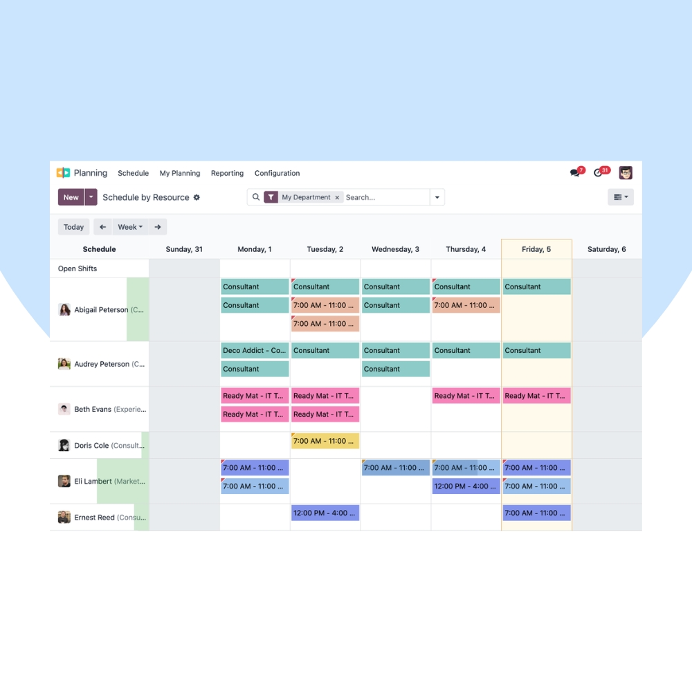
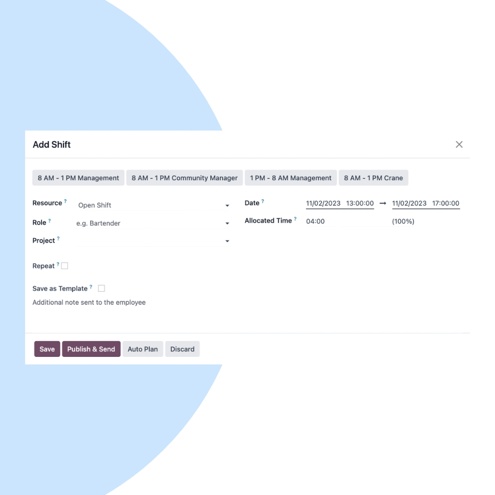
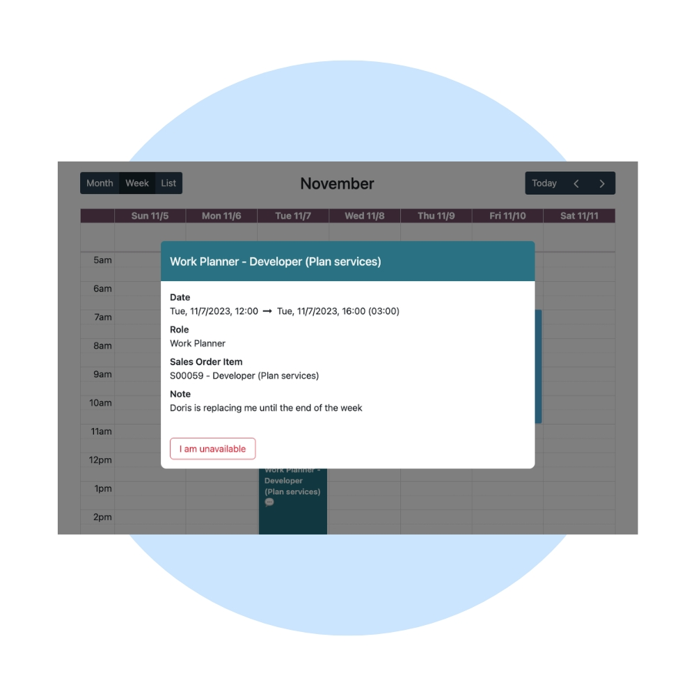

Plan your workforce efficiently with Odoo Planning. We help businesses schedule shifts, allocate resources, balance workloads, and avoid conflicts using a centralized planning and forecasting system.
We configure Odoo Planning to match your operational needs, staffing rules, and business constraints. Integrate planning seamlessly with Employees, Timesheets, Projects, Field Service, and Payroll.


Our implementation ensures accurate resource planning, reduced scheduling conflicts, and optimal utilization of your workforce across departments.
Create and manage employee shifts easily.
Assign the right people to the right tasks.
Avoid overlaps and overbooking automatically.
Plan based on real employee availability.
Anticipate workload and staffing needs.
Connected with HR, Projects & Timesheets.
We help you continuously improve planning accuracy, reduce idle time, and enhance workforce efficiency through analytics and process optimization.
